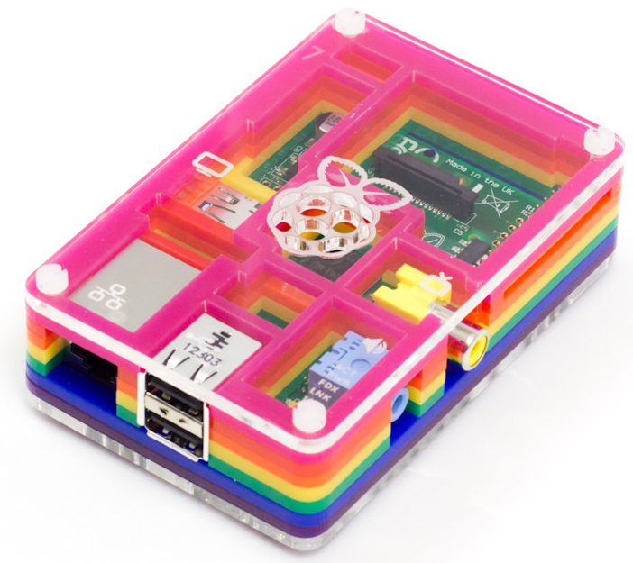
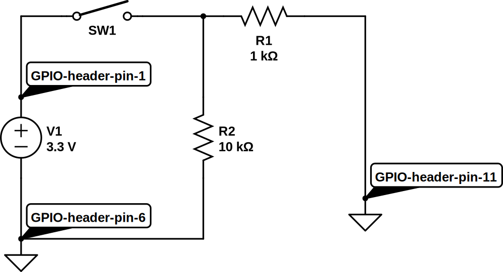
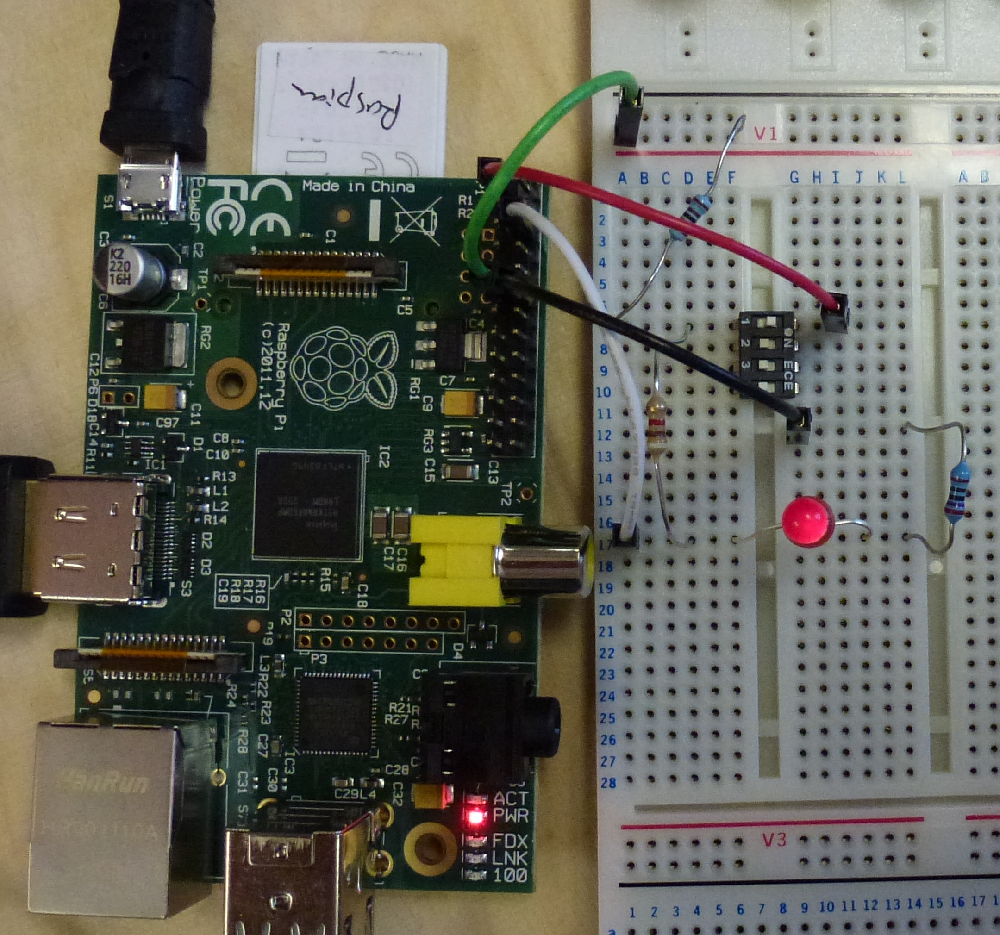

Hamish Cunningham, April 2013
The Pi is a general purpose computer. It runs GNU Linux1, which is an operating system used in satellites and phones, desktops and tablets, supercomputers and set-top boxes. It has graphics capabilities good enough for full HD video, plus computational power and memory sufficient to run a web browser or an office productivity suite. It has a good selection of standard interconnectivity options (including ethernet, HDMI, stereo analogue sound, and USB). Packing all of this into a very cheap, low power and low footprint (made in the UK!) device is truly game changing.
Another game changer with the Pi is its ability to connect directly to electronic circuits that can take readings from the physical environment and trigger actions in that environment (and/or over the network). When you couple a general purpose computing device with the Pi's extremely accessible interaction electronics all sorts of projects become so simple that everyone from school kids (Raspberry Pirates!) to absent-minded academic types can achieve them within a short space of time. This combination of general purpose computer with accessible electronics is a radical development.
Below we'll give an introduction to sensing and responding with the Pi, and detail some projects that can be completed in a few hours with a few pounds' worth of materials.
The Pi's connections for getting data from sensors and for activating external gizmos are called general purpose input output pins, or GPIO pins. The simplest of these will either sense or output a small voltage (3.3 volts, not enough to give you a shock!). We can connect simple electronic circuits to these pins to get the Pi interacting with its environment.
The Pi's GPIO pins are accessible via various software packages, which frees us from the tyranny of the keyboard/mouse/screen combination and allows us to program software to read from sensors and respond to changing conditions.
Here are some example projects that will teach you how to couple the Pi's GPIO pins with easy-to-build interaction electronics:
These projects use a prototyping tool called a breadboard to get started quickly and easily. For introductions to this way of working, and to hacker electronics in general, see the electronics section of the resources chapter.
Disclaimer: it is possible fry your Pi and other nasties by doing this type of thing — please see this warning for details.
Pretty much the simplest thing we can do with the Pi's GPIO header is to light up an LED2 — let's make this our Hello World!3. (If you've not done this type of thing before, please read this warning first.)
Materials used:
To create a Hello World! lighting circuit we only need two electronic components, an LED to light up and a resistor to prevent more current flowing through the LED than it can handle.4 Here's the circuit diagram5:
Here D1 is the LED we're lighting up and R1 is a resistor that prevents too much current flowing in the circuit. V1 represents the 3.3 volt power supply that the Pi makes available, with +ve on GPIO pin 1 and ground on pin 6. Note that I'm using the physical header pin numbers here as these are the easiest numbers to quickly match up to the Pi circuit board (just count left to right and top to bottom). There are several other ways to refer to the pins, however, and several gotchas along the way — for more detail see the discussion on GPIO pins below).
If we transfer this design onto our breadboard, we end up with something
looking like this:
So far, so boring: this is pretty much the equivalent of connecting a torch bulb to a battery and going "ahhh" at the pretty light. More interesting, especially in the context of our earlier discussion on general purpose devices and interaction electronics, is to drive the LED by software; to do this all we need to do physically is connect the circuit to a different pin on the GPIO header, in this case pin 11. Now spot the difference:
Note the shift from pin 1 to pin 11 on the GPIO header. That's all! Now we're almost ready to start turning the LED on and off using software running on the Pi, but first we need to take a detour into the murky world of GPIO pin numbering. (If you're lucky enough to have your Mum nearby you may want to ask her to hold your hand while reading the next section. If it ends in tears don't say I didn't warn you.)
I think if I went on a course in Egyptian hieroglyphics for a month and then revised my obfuscated C notes for a while I could probably come up with a numbering scheme for the GPIO pins which was perhaps half as confusing as the existing one. Actually that's a little unfair, but the problem is that there are four separate ways to refer to the pins, all different, all useful. To begin with, there are two offical numbering schemes, one relating to the physical header on the Pi circuit board that we actually make connections to (numbered 1 to 26), and the other relating to where they interface to the Broadcom system on a chip at the heart of the beast (the BCM2835). Then there's also a name for the function of the pin (e.g. 'GPIO 0'), and an extra complication is that a couple of pins changed function in the 'revision 2' version of the Pi. Finally, the way that we access the pins through software also has its own nomenclature, and, because some of that software generalises across multiple devices (e.g. the Pi and the Arduino) again the numbering is completely different.
I think I'd need to add runes and Clingon symbols to the mix if I was really trying to challenge the supremacy of the confusion that can result here.
Luckily there are a number of good sources to turn to for help. My favourite
is from Gordon Henderson, creator of Wiring Pi, an
excellent software library for talking to the Pi (and several other boards). I
recommend printing out Gordon's key to the GPIO
pins and keeping it handy at all times. I also strongly recommend working
on the Pi with the pins positionned in the top right corner, not the other way
around, so that the numbers on the diagram match up with the orientation of
the Pi. So do not do the following if you value your sanity (assuming you
still have some left, that is6):

The Pi's GPIO facilities cover a lot of other useful functions that we've not
even hinted at so far. Consult one of the Pi books for details,
or see this nice summary one-pager from
Pimoroni, makers of the fabulously cute PiBow case —

— and home of the
Pi logo's creator, Paul
Beech7.
Now we're ready to write some software to control the interaction electronics that we're connecting to the Pi.
Although the Linux operating system running on your Pi provides access to the GPIO pins at a low level via the sysfs virtual file system, it is generally easier to use a higher level library that abstracts a little further away from the underlying hardware. Such libraries exist for (at least) Perl, Unix shell script, Python, Scratch and Java. We'll use the WiringPi library from Gordon Henderson, which makes available the same abstractions for various devices and is a well tested and robust piece of kit. (Thanks Gordon!)
WiringPi provides a convenient command-line program called gpio that we can use to control and read from the GPIO pins, and we'll use this in our examples. This means that we're going to be programming in Unix shell script, which is the command language that the Pi's Raspbian Linux operating system drops you into by default when you log in. This language can be used from the command prompt (the $ or # that appears on screen to prompt you to make an input) and can also be collected into a file and used as a command (or script) in itself. This makes it the most direct way to experiment with Pi programming (not to mention controlling many types of computer), and is well worth learning, even if you're also learning a higher level language like Scratch, Java or Python.
GPIO pins either listen for a signal (in input mode) or produce a signal (in
output mode). Our first job when programming GPIO interaction code, then, is
to decide which mode the pins we're working with should be in, and ask
WiringPi to set them up accordingly. Refering back to our circuit diagram,
we see that header pin 11 is what we're using to drive the LED — i.e. make an
output — and that therefore we need to set pin 11 into output mode. For
reasons discussed above header pin 11 is known to WiringPi as
GPIO 0, so we use the gpio utility to set the mode for that pin like this:
gpio mode 0 out
We can read this as "call the gpio program to set the mode of pin 0 to output". (We don't need to do anything with pin 6, as this is always connected to ground and doesn't have a mode setting.) Next, let's turn our output pin on and see our LED light up:
gpio write 0 1
Again we're operating on pin 0, this time setting it high (to 3.3 volts — see next section). And now turn it off again (to 0 volts):
gpio write 0 0
Magic!
For our next trick, let's get our Pi to sense something in the outside world, and respond to that input by again turning the LED on and off.
Let's recap where we've got to. First we hooked up an LED and a resistor to the Pi's 3.3v supply, then moved it onto one of the GPIO pins and discovered how to switch it on and off via software. Now let's look at an example of the other side of the interaction coin, reading from a sensor. To get us started we'll use a switch as a sensor, and get our Pi software to respond to the position of the switch.
There are several example circuits for this type of thing knocking around; our starting point below is adapted from an Embedded Linux tutorial. Another good source (though using Python instead of shell script) is this physical computing tutorial from the Cambridge University lab where the Pi originated.
To make things a little more interesting we'll combine the data we get from the switch with the LED control circuit we developed above. In each case we're using the Pi's native logic voltage of 3.3 volts to signify binary 1 and using 0 volts to signify binary 0. (We can think of these as "on" and "off", or "high" and "low", or even "true" and "false", depending on what sort of mood we're in.) We'll read either a 0 or a 1 from our circuit depending on whether the switch is either open or closed respectively.
First here's the circuit to read the position of a switch8:

We connect the switch SW1 to the (always on) 3.3v supply (header pin 1), so
that when the switch is in the on position it will supply the logical high
value. Resistor R1 prevents mishaps if we accidentally set header pin 11 to
output at low (i.e. try to get the poor thing to pull the 3.3v supply to 0v,
with unhappy consequences). Then we use a pull down resistor, R2, to drag
pin 11 low when the switch is open. When the switch is closed, R2 being much
higher than R1 implies that pin 11 will be pulled high by the 3.3v supply from
pin 1.
Confused? There's more explanation in the Embedded Linux tutorial linked above, and a much more detailed presentation at AdaFruit. (The latter is in relation to the Arduino but the principles are the same.)
The breadboard to implement this circuit looks like this:

All we need now is some code to test what position the switch is in. We're sensing on header pin 11, which is WiringPi's 0, so we set 0 to input mode:
gpio mode 0 in
Now we can read the value like this:
gpio read 0
When the switch is on this will return a 1, and when it is off a 0. We're on a roll!9
We've nearly completed our lightening tour of the basics of interaction electronics with the Pi's GPIO facility. To finish off we'll connect up the sensing and responding sides of the picture. Here's a circuit which combines sensing from a switch with turning an LED on and off via software. The result is that we will now both sense from the switch and respond to the sensor data from software.

Nothing new here — we've just combined with LED driver circuit that we began with and the switch reader circuit that in the previous section. Here we have the switch sensor to the left and the LED driver to the right.
The breadboard to implement this circuit looks like this:


We've use a four-way switch (in "dual in line" or DIL pin style) because we
had one handy and because it was easy to connect to the breadboard, but we're
only using one of its channels — the equivalent of an SPST or "single pole
single throw" switch.
The code to drive this uses some neat features of Unix shell script:
gpio mode 0 in gpio mode 1 out while : do gpio write 1 `gpio read 0` sleep 1 done
The while : loop repeats forever (in shell ":" is a no-op command which always returns true, so the loop never hits a termination condition). We do this so that the program keeps testing to see if the switch position has changed. We don't really need to do this every few milliseconds, so to make the resultant load on the machine a little lower we use sleep to pause the program and set a wakeup timer in the operating system. The value of "1" passed to sleep means "one second", so our loop will run once per second, or thereabouts.10
The forward quotes (or backticks) in gpio write 1 `gpio read 0` do "command substitution": they run the command contained between the two quotes and replace the command with whatever is returned, then running the enclosing command. Here we're saying "read a value from GPIO 0" and then "write that value to GPIO 1". When the switch is on GPIO 0 will read high (and the command will return 1), at which point we'll write 1 to GPIO 1, our output pin which is driving the LED (so the LED will turn on). If the switch is off, then GPIO 0 will read low, returning 0 which will then be written to the output pin and turn the LED off.
So we've now written a program on the Pi that is both sensing from the outside world (the position of the switch) and sending out a response (lighting or extinguishing the LED). We've taken our first steps in interaction electronics; now its time to look at a couple of simple projects that we can build using the techniques that we've learned so far.
Parents — they're quite handy for doing the shopping and making breakfast and the like, but they do tend to get in the way, don't they? And even perfectly innocent teenage activities like building a particle accelerator in your bedroom can easily lead to awkward questions and family misunderstandings.
Let's use a Pi and a pressure mat to give an early warning of parental feet in the corridor.
Materials:
The first part is easy: we just replace the switch in the reading from switches circuit with a pressure mat11. Here's an example mat:

This works just like a switch — there are two wires to connect to, and when a heavy object (e.g. a parent) stands on the mat the two wires are connected (i.e. the resistance between them cycles between very high and very low).12 So we can use exactly the same circuit we used earlier for reading from a switch and turning an LED on or off:
One limitation of this circuit is that if Mum should happen to pop in one day and zap 50,000 volts across the Pi's GPIO pins the poor thing is unlikely to remain enthusiastic about driving our indicator LED — but we won't actually know that anything has changed, because as it stands there is no indication of normal operation as opposed to the various possible failure conditions. The next circuit addresses this limitation by adding another LED that is lit up when the pressure pad is not being stood on. That way we'll have an indicator of what state the system is in for both the "everything's ok" and the "run and hide!" conditions, so we'll immediately know if we've forgotten to switch the thing on, or if one of the LEDs has died, or etc.
The circuit:

The breadboard for this circuit looks like this:

The green LED runs when the mat is not being stood on, indicating that all is fine; the yellow LED (red would also be a good colour) lights up when it's time to hide the particle accelerator and pretend to be doing the homework.
A closer look:

We need a new program to drive the extra LED (which is on Wiring Pi's GPIO 2, connected on physical header pin 13). In Unix shell script a suitable program is this:
gpio mode 0 in
gpio mode 1 out
gpio mode 2 out
while :
do
if [ `gpio read 0` == 1 ]
then
gpio write 1 1
gpio write 2 0
else
gpio write 1 0
gpio write 2 1
fi
sleep 1
done
Here the two LEDs are controlled on GPIO 1 and 2, and as before we're reading the input on GPIO 0. When someone stands on the pressure mat the input is 1, and the first branch of the if statement will turn the first LED on and the second one off; otherwise the reverse will happen. So of our two LEDs, one will indicate safety and the other an alarm state.
Job done.
There's a poltergeist who lives in my basement. Either that, or I've had three completely coincidental pipe failures in the space of a couple of years. The last leak had such a high flow rate that if I hadn't wandered past in the morning and wondered what that hissing noise was we would have had a brand new swimming pool by the evening. The most worrying thing was that the leak came from a pipe joint that was brand new a year ago (and not fitted by me, either, but by a skilled professional13).
So I decided I needed a bit of long-term plumbing reassurance in the form of a water alarm that will send me an SMS text message whenever things get wetter than expected under the house. With a Pi and an alarm circuit like our parent alarm this turns out to be a nice project.
Materials used:
The trick here is to find a way to sense the presence of moisture. As water conducts electricity we can do this using a variation on one of our switching circuits: we'll run a length of two-core wire through all the areas where we expect flooding and strip each core so that a flood would connect the two cores together.
To decide on the values for the circuit that we'll use to connect to the Pi,
we need to test the resistance of the water connections using a multimeter; it
turns out that we have something between 20k and 50k ohms when the bare wire
is immersed. When the wire is dry (hopefully the long-term average!) the
resistance will be infinite (like an open switch). We also should expect that
the wires may touch (if someone steps on them and presses them together, for
example), so we also have to cater for a 0 ohms resistance. To deal with these
possibilities we'll use a 1k limiting resistor and a 100k pull down resistor
like this:

Here's what happens in our three cases:
The code to read from our water sensor is very simple: gpio mode 0 in sets things up, and gpio read 0 takes a reading. When things get wet (or there's a short circuit) the read statement will return 1; otherwise it will return 0.

TODO
TODO
Source code for the projects is available on the Gitorious open source hosting site. The project is called PiFi. To get started install git and clone the master branch:
git clone git@gitorious.org:pifi/pifi.git
This will create a directory pifi on your local system. See the file README.txt in that directory for details of what is where.
TODO
For introductions to basic circuit building, breadboarding or soldering, and to hacker electronics in general, see for example:
And lots and lots of others!16
The circuit diagrams are available on Circuit Lab under Creative Commons BY-NC-SA licence.
Voltage/Resistance/Current calculators
Pi hobby sites

Although all the voltages we're working with here are too small to hurt a big lump of a thing like a human being, it is perfectly possible to destroy your Pi by making connections to the wrong pins! It is also theoretically possible to create enough heat to start a fire (probably only if you pile something extremely flammable on top of it all and wait a week or so, but nevertheless please be warned).
The Pi has very low power consumption, but if you're an electronics newcomer (or even just dopey and error-prone like me) the safe thing to do is always power down whenever you're not working on your rig. And to proceed with caution!
Soldering brings with it its own set of potential gotchas of course. There's a clue to this in the involvement of a hot iron, molten metal and heated wires — we leave it as an exercise for the reader as to what happens when you touch something really hot with a part of your anatomy. If in doubt, don't try this at home.
Finally, please note that it is quite possible that these paragraphs contain nuts. Why don't sharks eat lawyers? Professional courtesy.
{kind=link}